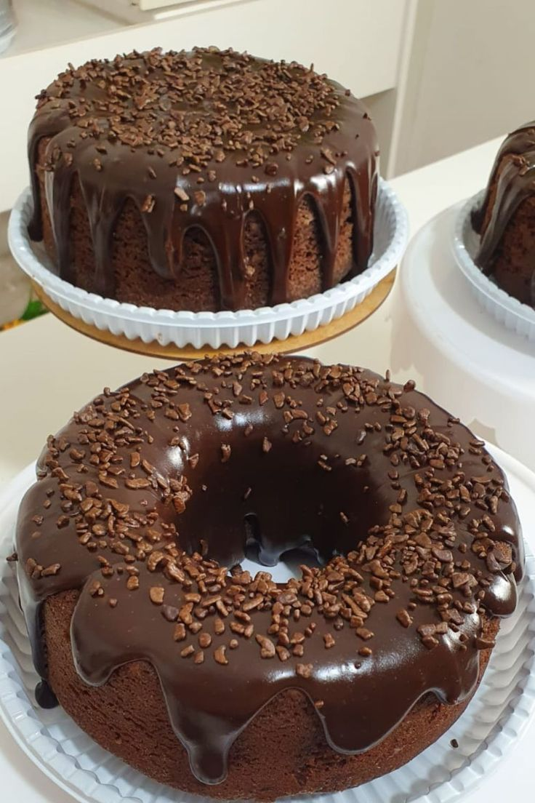
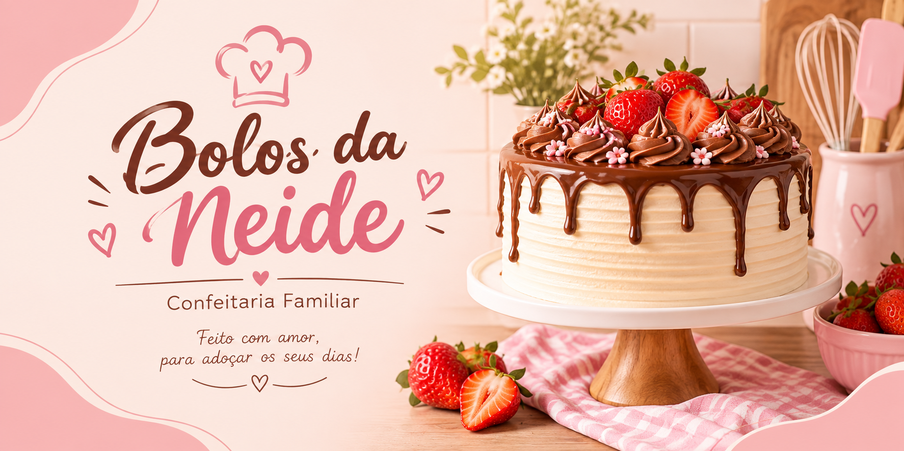
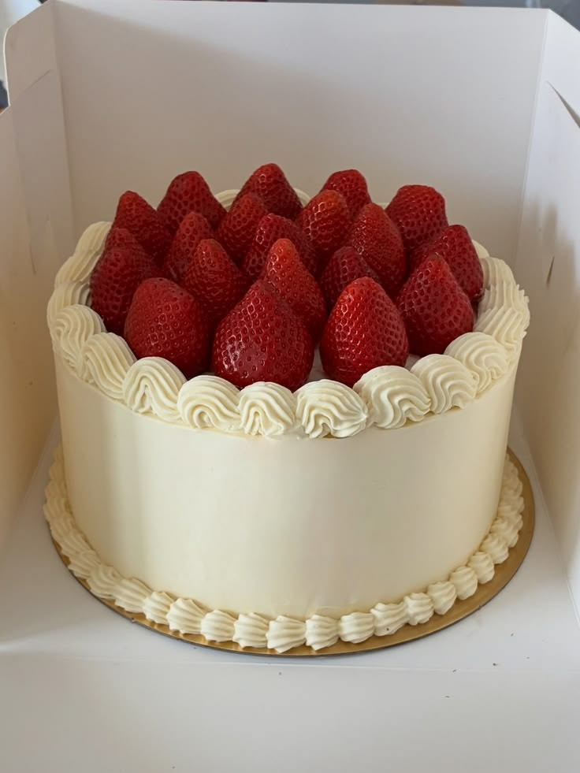
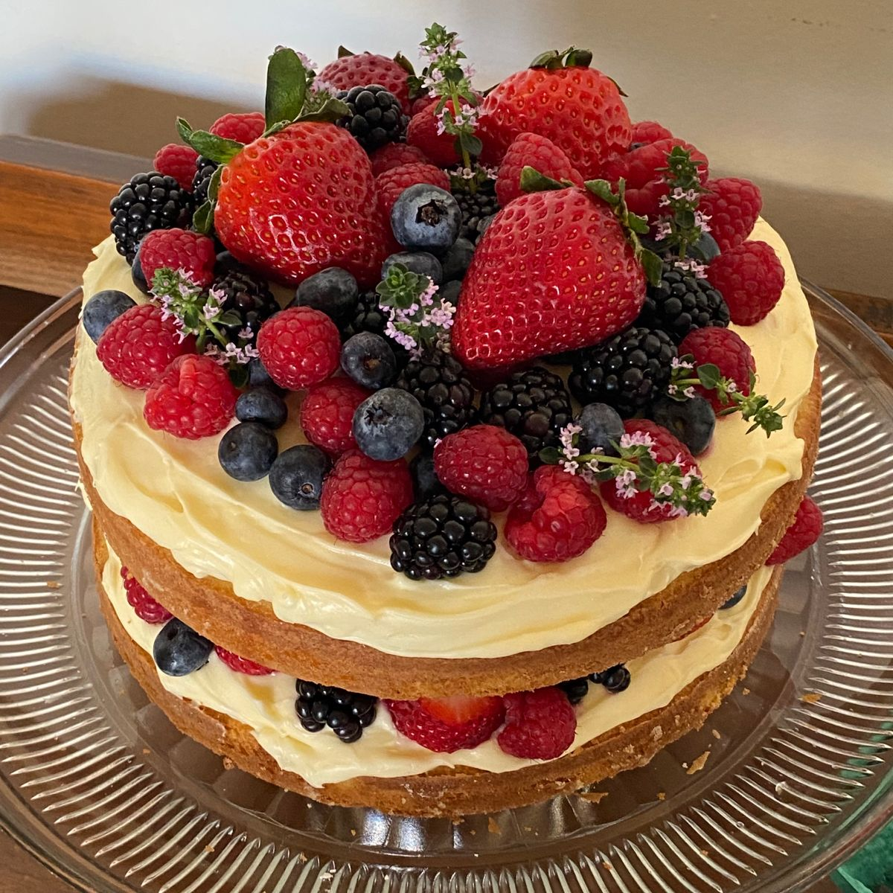
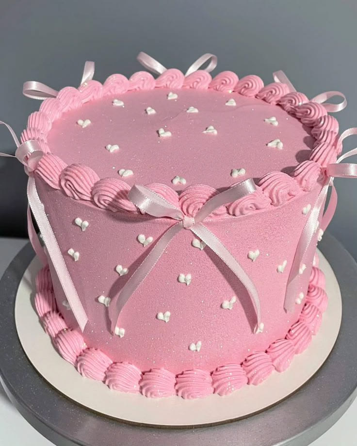
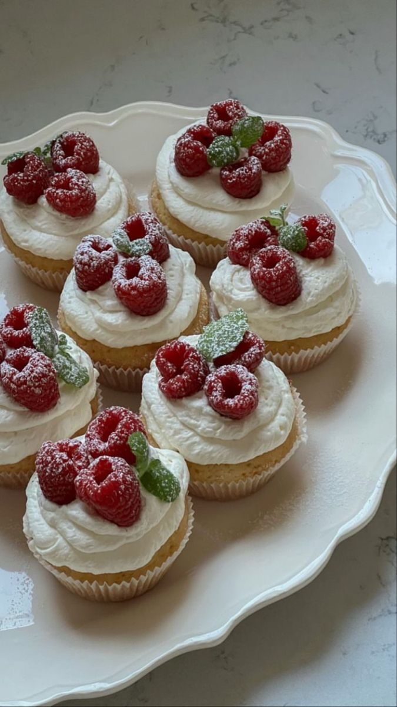
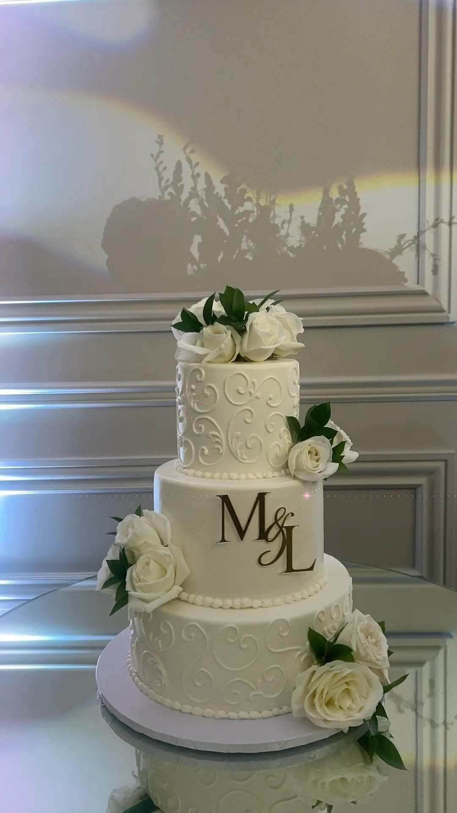

Bolo de chocolate
Irresistível bolo de chocolate com massa leve e molhada, recheio cremoso de brigadeiro tradicional e cobertura de ganache brilhante. Feito artesanalmente com ingredientes selecionados para adoçar o seu dia!

O sistema dos Bolos da Neide tem como objetivo facilitar o cadastro e o controle das encomendas de bolos, organizando as informações dos clientes e das entregas.

Irresistível bolo de chocolate com massa leve e molhada, recheio cremoso de brigadeiro tradicional e cobertura de ganache brilhante. Feito artesanalmente com ingredientes selecionados para adoçar o seu dia!

O queridinho da vitrine! Massa leve e molhadinha, recheio duplo de creme belga com morangos frescos selecionados e cobertura suave. Sabor irresistível e textura que derrete na boca. Feito no dia para garantir o máximo frescor da fruta.

O equilíbrio perfeito para quem não gosta de doces enjoativos. Camadas fofinhas de bolo recheadas com creme de confeiteiro artesanal e pedaços de frutas frescas selecionadas. Finalizado com cobertura leve de chantilly e decoração colorida de frutas. Sabor suave e refrescante!

Esqueceu de encomendar ou surgiu uma festa de última hora? Nós salvamos o seu parabéns! Bolo festivo com massa fofinha, recheio generoso e cobertura caprichada em chantininho ou granulado nobre. Acompanha embalagem segura para transporte.

A sua dose diária de doçura em uma caixinha! Mini bolinho individual recheado e com cobertura generosa. Embalado com todo o cuidado para chegar perfeito e fresquinho até você.
>
Desenvolvemos combinações sofisticadas de sabores que agradam aos paladares mais exigentes. Texturas equilibradas, doçura na medida certa e ingredientes de altíssima qualidade para fechar a sua festa com chave de ouro.
| Bolo | Preço |
|---|---|
| Bolo de chocolate | R$ 60,00 |
| Bolo de morango | R$ 70,00 |
| Bolo de frutas | R$ 75,00 |
| Bolo casamento | R$ 100,00 |